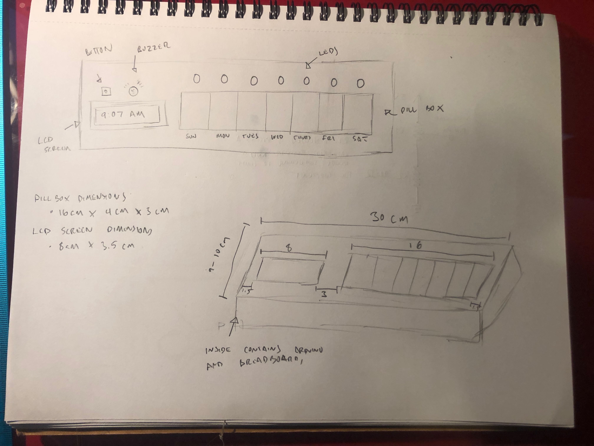
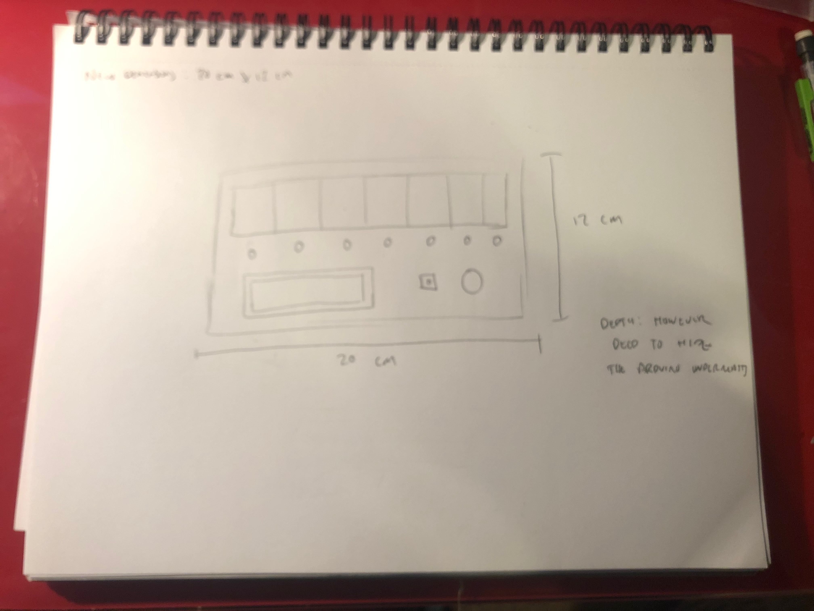
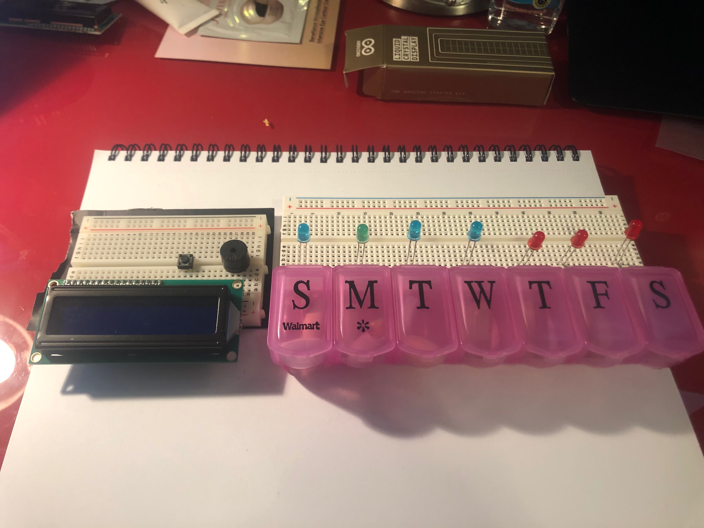
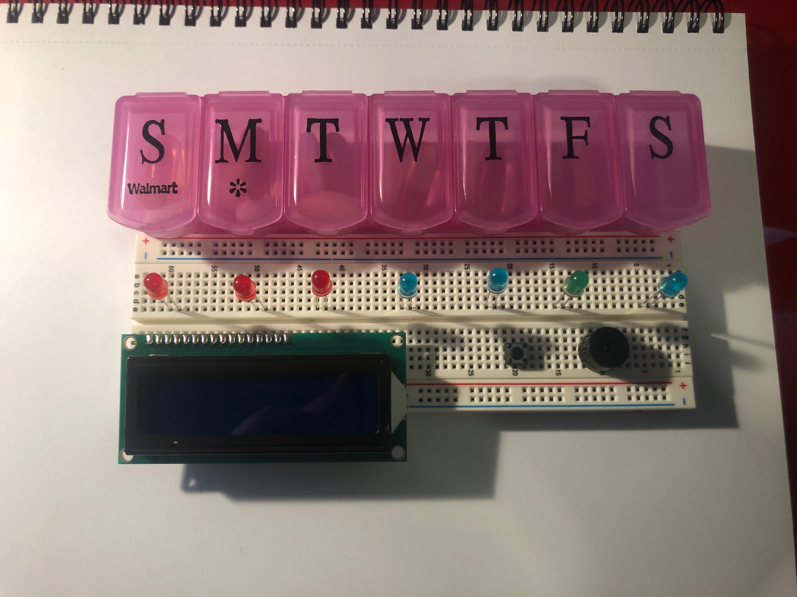

A medicine alarm clock that reminds you to take your medicine and shows if you’ve taken it or not for the day. Great for people with disabilities or the elderly!
A medication reminder using some sort of sensor that can tell if you've taken your medicine off the sensor, meaning you've taken your medication for the day. It uses LED's to indicate if you've taken it or not. You can also set a time for a buzzer to go off to remind you if you have not taken it by a certain time.
After familiaring myself with the parts in our Arduino kit and looking up several different beginnering Arduino projects, I modified my final project idea slightly so it matched the scope of my abilities and materials I had on hand.
 I decided to make a reminder for taking daily medicine. There will be seven LED's that correspond to a day of the week. There will be an LED screen that is programmed to keep track of a 24 hour cycle. For a specifcied time of the day, the LED of the corresponding day will turn on, signaling the user to take their medicine. Pushing the button will turn off the LED, letting them know they've taken their medicine.
If ten minutes have passed from the intial time, the LED will begin to blink and the buzzer will go off. This is meant to help get the user's attention to take their medication.
For now, I've designated one LED for each day of the week, though I could simplify this by only using one LED as a reminder. However, I like the idea of having one LED per day of the week as it helps the user keep track of their medication inttake. I hope to make the version with seven LED's, but I will see if I need to make changes as I begin working on this project.
 Using my Arduino parts, I rearranged my pieces to see how they can all be laid out on the breadboard with the pill box.
Some next steps and questions I have to begin the implementation of this project are:
I hope to answer these questions so I can start working on the physical computing and programming of my project.
For the final version of this project, the Med-Minder is an alarm clock for daily medicine taking. There are two LED's, one green and one red, that lets the user know if they have taken their medicine for the day or not. The LED's automatically reset at the end of the day.
The Arduino keeps track of the time, updating it on the LCD screen. The LCD screen also lets you know if you've taken you medicine for the day with different messages.
When the alarm goes off at the pre-set time, the LCD screen changes to remind the user to take their meds. The buzzer goes off as well as the LED strip around the box, which blinks to get the users attention. The alarm stops only when the user takes ther medicine and pressed the button.
The schematic of the system. Blue is ground, red is 5V.
The enclosure was made using Rhino and laser cutting 1/8 inch birch plywood and using wood glue to hold the pieces together.
The circuit of the system.
#include <LiquidCrystal.h>
#include <DS3231.h>
// creates an LCD object
LiquidCrystal lcd(12, 11, 5, 4, 3, 2);
// creates an RTC object
DS3231 rtc(A4, A5);
// initializes pin 6 as the buzzer
int buzzer = 6;
// initializes pin 1 as the button
int button = 1;
// initializes the redLED to pin 7
int redLED = 7;
// initializes the greenLED to pin 8
int greenLED = 8;
// initializes the LED stip to pin 9
int ledStrip = 9;
int buttonState; // buttonstate = 0 when pressed, 1 when not presed
int takenMeds = 0; // 0 is not taken, 1 is taken, 2 is alarm going off
// creates strings to hold the day of week and curren time
String dayOfWeek;
String currentTime;
// the set alarm time
String alarmTime = "11:00:00";
void setup() {
// initializes buzzer as an output
pinMode(buzzer, OUTPUT);
// initializes redLED as an output
pinMode(redLED, OUTPUT);
// initializes greenLED as an output
pinMode(greenLED, OUTPUT);
// initializes LED strip as an output
pinMode(ledStrip, OUTPUT);
// initializes button as an input
pinMode(button, INPUT);
// intializes LCD screen with dimensions 16x2
lcd.begin(16, 2);
// starts rtc module
rtc.begin();
}
void loop() {
// print time to the LCD
printTime();
// reads the current state of button
buttonState = digitalRead(button);
if (buttonState == 0) { // if button is pressed
takenMeds = 1; // save that medicine has been taken
}
// store time from rtc into currenTime
currentTime = rtc.getTimeStr();
if (takenMeds == 2) { // if the alarm is going off
// turn off the led strip and buzzer
noBeep();
// turn on the led strip and buzzer
beep();
} else if (alarmTime != currentTime && takenMeds == 0) { // else if the time is not the set alarm and the medicine hasn't been taken yet
// print the message on the LCD
printMsg("GOOD MORNING!");
// turn on the red LED
digitalWrite(redLED, HIGH);
// turn off the green LED
digitalWrite(greenLED, LOW);
} else if (alarmTime != currentTime && takenMeds == 1) { // else if the time is not the set alarm and the medicine has been taken
// turn off the led and buzzer
noBeep();
// print the message on to the LCD screen
printMsg("HAVE A NICE DAY!");
// turn the red led off
digitalWrite(redLED, LOW);
// turn th green led on
digitalWrite(greenLED, HIGH);
} else { // else, when the current time is the same as the alarm time
//save that the alarm is going off
takenMeds = 2;
// turn the LED strip and buzzer on
beep();
// print message to LCD screen
printMsg("TAKE YOUR MEDS!");
// turn on the red LED
digitalWrite(redLED, HIGH);
// turn off the green LED
digitalWrite(greenLED, LOW);
}
if (currentTime == "23:59:00") { // if the current time is this
// reset the alarm
resetMeds();
}
}
// This method gets the day of week and time from the rtc and prints it to the LCD screen
void printTime() {
//set cursor of LCD to 0,0
lcd.setCursor(0, 0);
// store the day of the week from the rtc
dayOfWeek = rtc.getDOWStr();
// transform the string into all uppercase
dayOfWeek.toUpperCase();
//print the first 3 letters of the day
lcd.print(dayOfWeek[0]);
lcd.print(dayOfWeek[1]);
lcd.print(dayOfWeek[2]);
lcd.print(", ");
// print the current time to the LCD screen
lcd.print(rtc.getTimeStr());
}
// Prints a message on the second line of the LCD screen
void printMsg(String x) {
// clears the LCD screen
lcd.clear();
// prints the time
printTime();
// set cursor to the second line
lcd.setCursor(0,1);
// print the message passed in as a stirng
lcd.print(x);
}
// turns the buzzer and LED strip on
void beep() {
// set the buzzer to a tone of 1000
tone(buzzer, 1000);
// turn the LED strip on
digitalWrite(ledStrip, HIGH);
// wait 500 ms
delay(500);
}
// turn the buzzer and LED strip off
void noBeep() {
// turn off the buzzer
noTone(buzzer);
// turn off the LED strip
digitalWrite(ledStrip, LOW);
// wait 500 ms
delay(500);
}
// resets the alarm at midnight
void resetMeds() {
// update that the meds have not been taken yet
takenMeds = 0;
// turn the redLED on
digitalWrite(redLED, HIGH);
// turn the green LED off
digitalWrite(greenLED, LOW);
}
The RTC module keeps track of the current time. A predetermined alarm time is stored in the Arduino. A series of conditional statements checks the status to control the output.If the alarm time is different from the current time and the medicine has not been taken, the red LED is on and the LCD screen reads "Good Morning!", as the alarm time is 10:30 am. If the alarm time is different from the current time and the medicine has been taken, the green LED is on and the LCD screen read "Have a nice day!"When the alarm time is the current time, the buzzer turns on and the LED strip flashes, and the LCD screen reads "Take your medicine."When the button is pressed, it says that the medicine is taken and turns off the buzzer, LED strip, and turns on the red LED. When the current time passes midnight into the next day, the time and the status of the system resets so it reads the medicine for the day has not been taken.